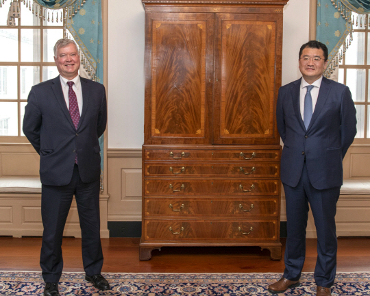
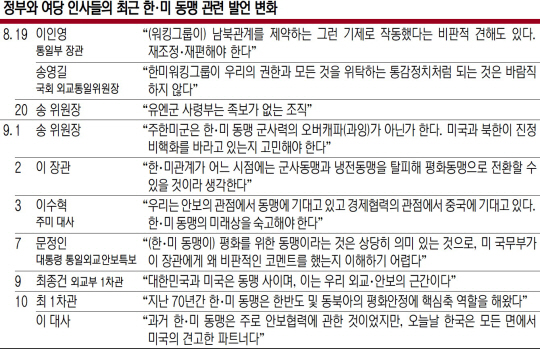

기념사진도 ‘거리두기’ : 방미 중인 최종건(오른쪽) 외교부 1차관이 10일 미국 워싱턴DC의 국무부 청사에서 스티븐 비건 국무부 부장관과 회담을 가진 뒤 기념사진을 찍고 있다. 외교부 제공
韓 잇단 한미동맹 강조 배경
기존 與인사 발언과 확 달라져
미중 사이 전략적 모호 고수땐
反中 원하는 美와 멀어질 우려
방미 중인 최종건 외교부 1차관이 연일 한·미 동맹을 강조하면서 미국 측과 일종의 패스트트랙인 ‘동맹 대화’(가칭) 신설에 합의한 것은 최근 정부·여당 인사들의 발언으로 불거진 미국 측의 불신을 가라앉히려는 행보로 해석된다. 미·중 갈등 속에 전략적 모호성을 고수하다 반중 전선 참여를 요구하는 미국과 거리가 멀어지는 상황을 막으려는 성격도 담겨 있다. 또 주한미군 방위비 분담금 협상 문제 등 한·미 동맹 불안 요소를 제어함으로써 오는 11월 미 대선 이후 대북제재 완화 등 한반도 문제에 집중할 기반을 마련하려는 포석 역시 깔려 있다.

최 1차관은 10일 미국 워싱턴DC의 주한 미 대사관에서 특파원들과 가진 방미 결과 브리핑에서 “지난 70년간 한·미 동맹이 한반도 및 동북아의 평화안정에 핵심축 역할을 해왔다”며 “지난 3년간 한·미 정상 두 분이 가져온 굳건한 신뢰를 바탕으로 지속적인 협력과 소통을 이어나가자는 데 동의했다”고 강조했다. 또 최 1차관은 이날 카운터파트인 스티븐 비건 미 국무부 부장관과의 회담에서 국장급 실무협의체인 ‘동맹 대화’를 신설하는 데 합의했다고 밝혔다. 때마침 이수혁 주미 대사도 이날 조지워싱턴대의 6·25전쟁 70주년 기념행사 축사에서 “한국은 모든 면에서 미국의 견고한 파트너로, 우리는 가치와 민주주의·시장경제를 공유하며 서로 배우고 서로의 기여를 인정한다”면서 한·미 동맹의 중요성을 강조했다.
이는 그동안 정부 인사들이 밝혀왔던 입장과는 정반대 흐름이다. 이인영 통일부 장관은 지난 2일 한·미 동맹을 ‘냉전동맹’으로 평가하면서 동맹 재조정 필요성을 제기해왔고, 이 대사 역시 3일까지만 해도 “한·미 동맹의 미래상을 숙고해야 한다”면서 각을 세웠다. 특히 정부 주요 인사들은 대북제재 문제를 논의하는 한미워킹그룹에 대해 매우 부정적이었으며, 그중 워킹그룹을 “일제강점기 통감 정치”로 비유했던 송영길 국회 외교통일위원장이 대표적이다. 하지만 이날 최 1차관은 ‘동맹 대화’까지 신설하며 한·미 간 워킹그룹-동맹 대화-차관급 협의의 3중 대화 채널 시스템을 구축한 셈이어서 주목된다.
이 같은 전향적 입장 변화에 대해 전문가들은 미국의 불신이 높아질 경우 미·중 갈등 격화와 대북 대화가 단절 중인 상황에서 운신의 폭이 더 좁아질 수 있음을 우려했기 때문이라는 평가가 나온다. 새로운 안보라인 구성 뒤 한·미 동맹에 균열을 일으키는 발언이 쏟아지며 미국 조야에서 우려가 커지자 이를 달래려는 의도도 깔려 있다. 남북협력을 확대하려는 대북정책에 속도를 내기 위해선 미국의 협조가 필요하다는 현실적 판단이 작용한 셈이다.
워싱턴 = 김석 특파원 suk@munhwa.com
[ 문화닷컴 바로가기 | 문화일보가 직접 편집한 뉴스 채널 | 모바일 웹 ]
[Copyrightⓒmunhwa.com '대한민국 오후를 여는 유일석간 문화일보' 무단 전재 및 재배포 금지(구독신청:02)3701-5555)]